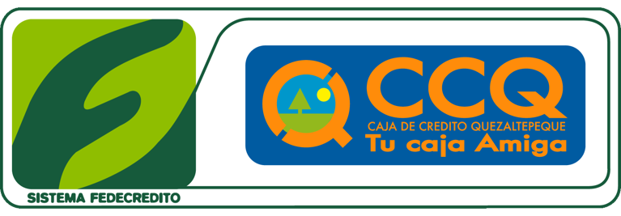

Portafolio
Habilidades
 HTML
HTML CSS
CSS JavaScript
JavaScript PHP
CPanel
 SQL
SQL React
React Node JS
Node JSExperiencia

Experiencia desarrollada en Caja de Crédito de Quezaltepeque institución financiera ubicada en Quezaltepeque, La Libertad, El Salvador
Los objetivos de este puesto eran: asesorar a gerencia en cuanto a las decisiones que se tomaran en cuanto tecnología, dar mantenimiento a la red interna de la institución, organizar el mantenimiento del hardware, administrar los correos electrónicos institucionales y la aplicación web de administración interna la cual esta desarrollada con las tecnologías de HTML, CSS, PHP y JavaScript y su base de datos alojada en CPanel con MySQL, a parte de brindar soporte técnico a todo empleado que lo necesitara.
En los ocho meses se logró sistematizar la mayoría de procesos que aun no estaban digitalizados, logrando así obtener más información de los clientes en la base de datos.
Se actualizo el hardware de computación según los requerimientos mínimos para garantizar el funcionamiento optimo del core bancario.
Experiencia desarrollada en Caja de Crédito de Quezaltepeque institución financiera ubicada en Quezaltepeque, La Libertad, El Salvador.
El objetivo principal por el que fui contratado en este puesto, era arreglar todos los errores que presentaba el sistema administrativo interno de la institución financiera, esto se logro en los primeros tres meses de trabajo, permitiendo así empezar a automatizar procesos del mismo sistema con código de javascript, agregando funcionalidades como la evaluación si los clientes eran aptos para obtener créditos teniendo como parámetros las políticas internas de dicha institución.
Esto permitió obtener tiempo para apoyar al área de informática con el mantenimiento de software, soporte técnico a los empleados, y evaluar otros procesos para que estos fueran agregados al aplicativo web
HTML CSS JavaScript SQL React Node JS